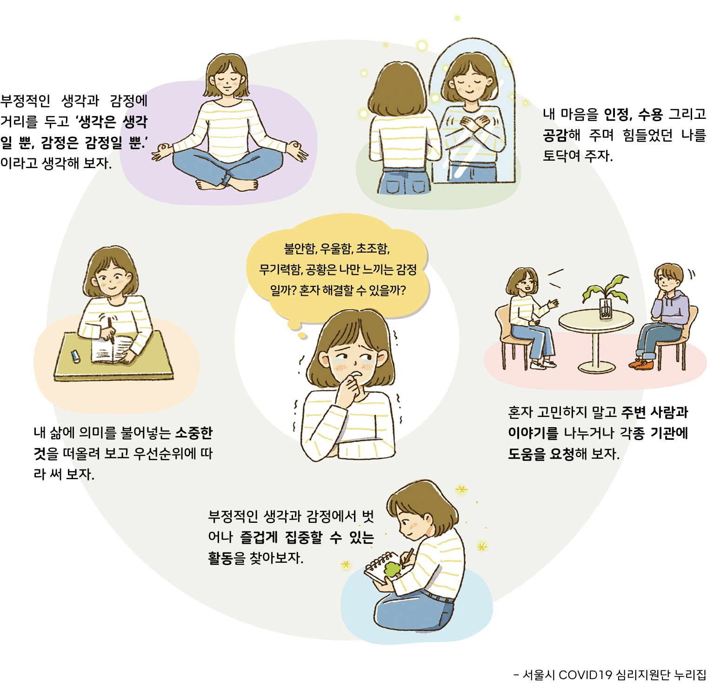

자료 읽기우울할 땐 어떻게 해야 할까
● 다음 글을 읽고 세 가지 도덕 판단은 각각 서양의 어떤 도덕 판단 기준에 따른 것인지 연결해 보자.

● 내가 우울할 때 가장 실천해 보고 싶은 방법은 무엇인지 이야기해 보자.
나는 그림을 그릴 때 집중이 잘 되고 그림을 그린 후 느껴지는 뿌듯함과 성취감이 스트레스와 불안감을 낮춰 주는 것 같다. 그래서 앞으로 나는 우울할 때 그림 그리기 활동을 할 것이다.